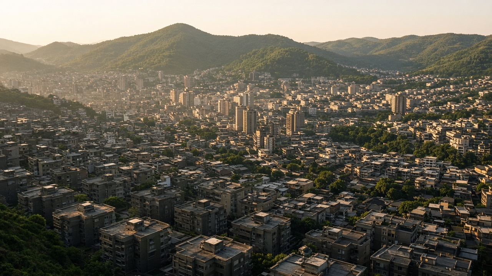
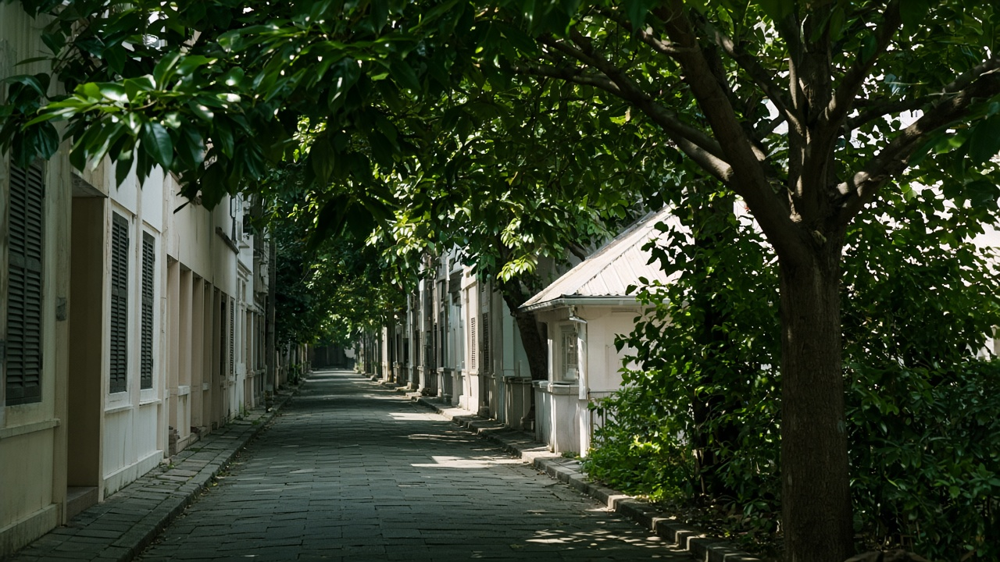
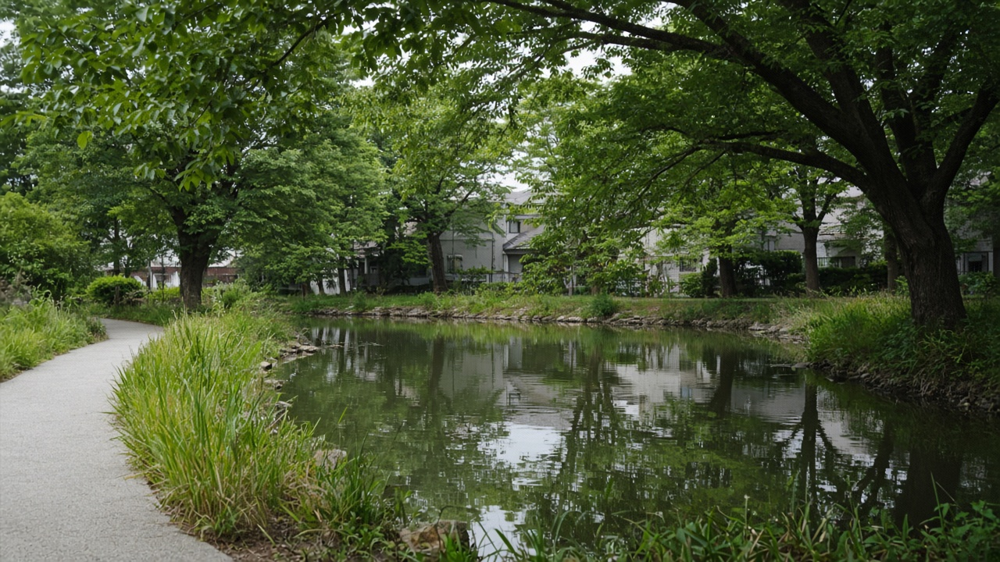

Urban Heat Islands and Cool Cities
Published on August 20, 2026

Urban heat islands form when dark roofs, asphalt, and packed buildings absorb sunlight and release it slowly at night, keeping cities several degrees warmer than surrounding fields and forests. Dense traffic, waste heat from cooling machines, and the loss of soil moisture amplify the effect, especially in valleys that trap warm air. Night-time heat is the hidden danger: bodies cannot recover from daytime stress, and hospitals see more cases among infants, outdoor workers, and older residents. Kathmandu Valley and Terai towns already record hotter nights as concrete replaces paddy and riverbanks. Mapping surface and air temperatures by neighbourhood reveals that low-income blocks with little shade often suffer more than leafy institutional campuses.
Cool-city strategies combine reflective materials, vegetation, water, and shade. High-albedo roofs and pavements bounce solar energy instead of storing it. Street trees, parks, and green walls cool through transpiration and intercept radiation before it hits walls. Restoring ponds, canals, and river edges adds evaporative cooling if water quality and mosquitoes are managed. Night ventilation and cooler building skins reduce the need for mechanical cooling that would otherwise dump more heat outdoors. Geometry matters: narrow shaded lanes can be cooler than wide unshaded boulevards, while glass towers can create glare and radiant heat on sidewalks.
Municipal action should set cool-roof standards, protect existing canopy, and require shade on new parking and playgrounds. Heat-health plans designate cooling centres, adjust outdoor work hours, and warn residents during extreme spells. In Pokhara, Nepalgunj, and expanding valley municipalities, planting native street trees and opening soil in sealed courtyards cost less than later hospital bills. Success is measured in reduced night temperatures, fewer heat-related clinic visits, and equitable canopy cover across wards—not only a few showcase parks. Cool cities treat heat as a design problem of surfaces, moisture, and shade, not an unavoidable by-product of growth.

सहरी ताप टापु तब बन्छन् जब गाढा छाना, कालोपत्रे र थुप्रिएका भवनले सूर्य प्रकाश सोस्छन् र रातमा बिस्तारै छाड्छन्, शहर वरपरका खेत र वनभन्दा केही डिग्री तातो राख्छन्। बाक्लो ट्राफिक, चिस्याउने मेसिनको फालिएको ताप र माटोको ओस हराउनुले प्रभाव बढाउँछ, विशेष गरी तातो हावा थुन्ने उपत्यकामा। रातको ताप लुकेको खतरा हो: शरीर दिनको तनावबाट निको हुन पाउँदैन र शिशु, बाहिरी कामदार र वृद्धमा अस्पतालका घटना बढ्छन्। काठमाडौं उपत्यका र तराई सहरमा धान र नदीकिनार कंक्रिटले विस्थापित गर्दा रात पहिले नै तातिएका छन्। छिमेकअनुसार सतह र हावा तापक्रम नक्सा गर्दा कम आयका छायाविहीन खण्ड पातदार संस्थागत परिसरभन्दा बढी पीडित देखिन्छन्।
शीतल शहर रणनीतिले परावर्तक सामग्री, वनस्पति, पानी र छाया जोड्छ। उच्च परावर्तनका छाना र सतहले सौर्य ऊर्जा भण्डारण नगरी फर्काउँछन्। सडक रूख, पार्क र हरियो पर्खालले वाष्पोत्सर्जनबाट चिस्याउँछन् र विकिरण भित्तामा पुग्नुअघि रोक्छन्। पोखरी, नहर र नदी किनारा पुनर्स्थापनाले वाष्पीकरण शीतलन थप्छ यदि पानी गुणस्तर र लामखुट्टे व्यवस्थापन छ। रातको हावा र चिसो भवन छालाले यान्त्रिक चिस्याइको आवश्यकता घटाउँछ जसले बाहिर अझ ताप फाल्थ्यो। ज्यामिति महत्त्वपूर्ण छ: साँघुरो छायादार गल्ली फराकिलो छायाविहीन सडकभन्दा चिसो हुन सक्छ भने काँचका टावरले फुटपाथमा चम्क र विकिरण ताप सिर्जना गर्न सक्छन्।
नगर कारबाहीले चिसो छाना मापदण्ड राख्नुपर्छ, विद्यमान छानो जोगाउनुपर्छ र नयाँ पार्किङ तथा खेल मैदानमा छाया अनिवार्य गर्नुपर्छ। ताप-स्वास्थ्य योजनाले शीतल केन्द्र तोक्छ, बाहिरी काम समय मिलाउँछ र चरम अवधिमा बासिन्दालाई चेतावनी दिन्छ। पोखरा, नेपालगन्ज र फैलँदै गरेका उपत्यका नगरमा स्थानीय सडक रूख रोप्ने र बन्द आँगनमा माटो खोल्ने खर्च पछिका अस्पताल बिलभन्दा कम छ। सफलता घटेको रात तापक्रम, ताप सम्बन्धी क्लिनिक भ्रमण कमी र वडाभर न्यायोचित छानो ढाकाइमा मापिन्छ—केही प्रदर्शन पार्कमा होइन। शीतल शहरले तापलाई सतह, ओस र छायाको डिजाइन समस्या मान्छ, वृद्धिको अनिवार्य उपउत्पादन होइन।

शहरी ऊष्मा द्वीप तब बनते हैं जब गहरे छत, डामर और ठसी इमारतें सूर्य प्रकाश सोखती हैं और रात में धीरे छोड़ती हैं, शहर को आसपास के खेतों और वनों से कई डिग्री गर्म रखती हैं। घना ट्रैफ़िक, ठंडा करने वाली मशीनों की फेंकी ऊष्मा और मिट्टी की नमी खोने से प्रभाव बढ़ता है, विशेषकर गर्म हवा बाँधने वाली घाटियों में। रात की गर्मी छिपा ख़तरा है: शरीर दिन के तनाव से उबर नहीं पाता और शिशुओं, बाहरी कामगारों तथा वृद्धों में अस्पताल के मामले बढ़ते हैं। काठमांडू घाटी और तराई नगरों में धान और नदीतट कंक्रीट से हटने पर रातें पहले ही गर्म हो चुकी हैं। मोहल्ले अनुसार सतह और हवा तापमान नक्शा करने पर कम आय वाले छायाहीन खंड पत्तेदार संस्थागत परिसरों से अधिक पीड़ित दिखते हैं।
शीतल शहर रणनीतियाँ परावर्तक सामग्री, वनस्पति, जल और छाया जोड़ती हैं। उच्च परावर्तन वाली छतें और सतहें सौर ऊर्जा जमा किए बिना लौटाती हैं। सड़क वृक्ष, पार्क और हरित दीवारें वाष्पोत्सर्जन से ठंडा करती हैं और विकिरण दीवार तक पहुँचने से पहले रोकती हैं। तालाब, नहर और नदी किनारे बहाल करने से वाष्पीकरण शीतलन जुड़ता है यदि जल गुणवत्ता और मच्छर प्रबंधन हो। रात की हवा और ठंडी इमारत खालें यांत्रिक ठंडक की ज़रूरत घटाती हैं जो बाहर और ऊष्मा फेंकती। ज्यामिति मायने रखती है: संकरी छायादार गलियाँ चौड़ी छायाहीन सड़कों से ठंडी हो सकती हैं जबकि काँच टावर फ़ुटपाथ पर चमक और विकिरण ताप पैदा कर सकते हैं।
नगर कार्रवाई को ठंडी छत मानक तय करने, मौजूदा छत्र बचाने और नई पार्किंग तथा खेल मैदानों पर छाया अनिवार्य करने चाहिए। ऊष्मा-स्वास्थ्य योजनाएँ शीतल केंद्र नियत करती हैं, बाहरी काम घंटे मिलाती हैं और चरम अवधि में निवासियों को चेतावनी देती हैं। पोखरा, नेपालगंज और फैलती घाटी नगरपालिकाओं में देशी सड़क वृक्ष लगाना और बंद आँगनों में मिट्टी खोलना बाद के अस्पताल बिलों से सस्ता है। सफलता घटे रात तापमान, ऊष्मा संबंधी क्लिनिक भ्रमण कमी और वार्डों में न्यायसंगत छत्र ढकाव में मापी जाती है—केवल कुछ प्रदर्शन पार्कों में नहीं। शीतल शहर ऊष्मा को सतह, नमी और छाया की डिज़ाइन समस्या मानते हैं, वृद्धि का अनिवार्य उपोत्पाद नहीं।